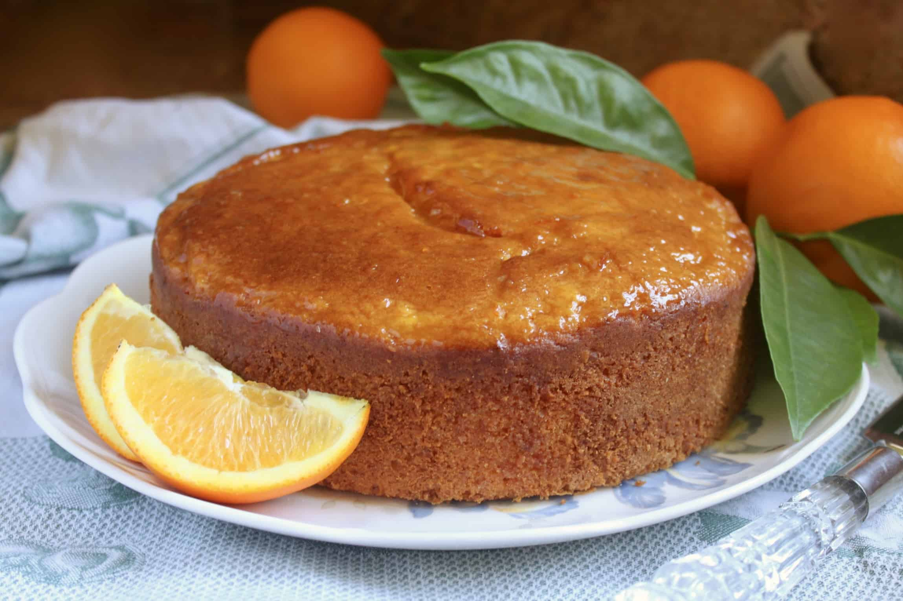

Orange Cage Recipe

Ingredients
- 1 ¾ cup all-purpose flour
- ½ teaspoon salt
- 2 teaspoon baking powder
- 1 ¼ cup sugar I used fine sugar
- ½ cup milk
- ½ cup of orange juice
- ¼ cup oil
- ¼ cup melted unsalted butter
- 3 medium size eggs
- 1 tablespoon orange zest
- 1 teaspoon vanilla
Instructions
- Preheat oven to 350F/180C. Butter or line with parchment paper a 9 by 5-inch loaf pan and set aside.
- Sift together the flour, baking powder, and salt set aside.
- In a different bowl, add the melted butter, oil, sugar, and beat until well combined.
- Add the eggs one at a time beating the mixture after adding each egg.
- Add the milk and whisk, then add the orange juice, orange zest, and vanilla and whisk for one minute.
- Add the dry ingredients to the wet and gently mix for a few seconds. You might see small lumps in the batter, please ignore it but don’t over mix the batter. The lumps will dissolve and won’t be seen in the cake after it is baked.
- Pour the orange cake batter in the previously prepared baking pan.
- Bake, the batter for 40 to 45 minutes or until its golden and a skewer inserted in the middle of the cake, comes out clean.
- If you have used parchment paper in the pan, then pull the cake out of the pan from both side of the parchment paper and place it over a cooling rack for 10 minutes, then remove the cake from the parchment paper and keep it on the cooling rack to cool completely.
- If you are not using parchment paper, then remove the pan from the oven and transfer it to a cooling rack, after 7 minutes remove the cake from the pan and place it over the cooling rack to cool completely.